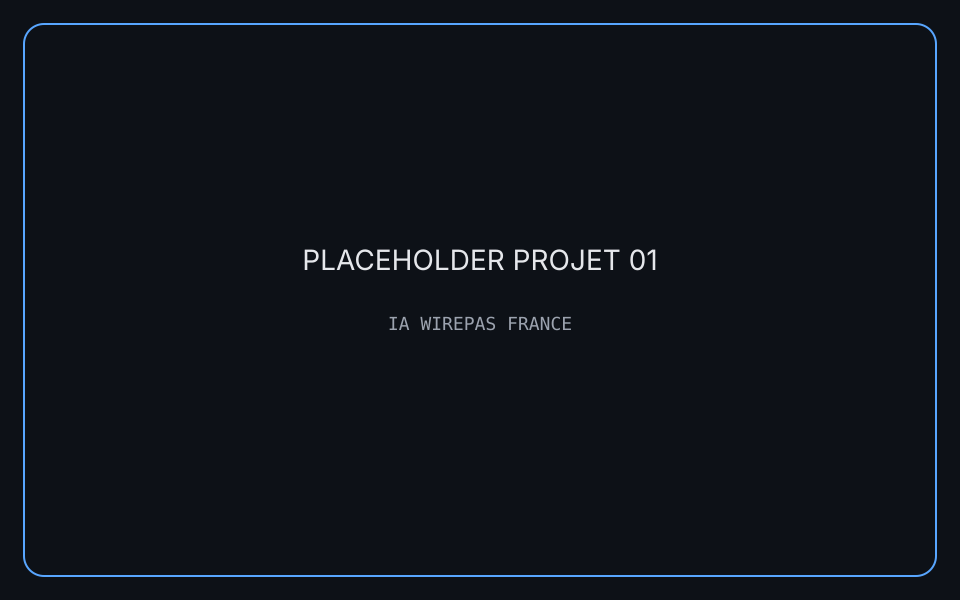
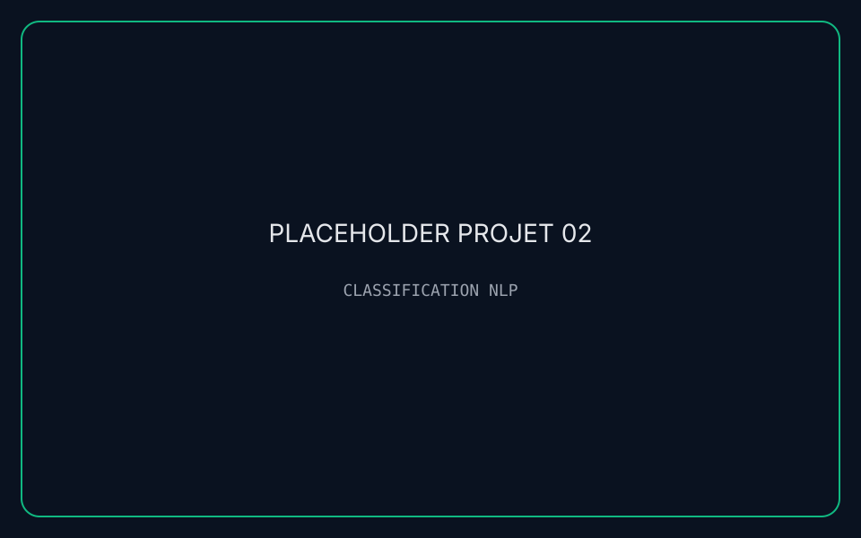
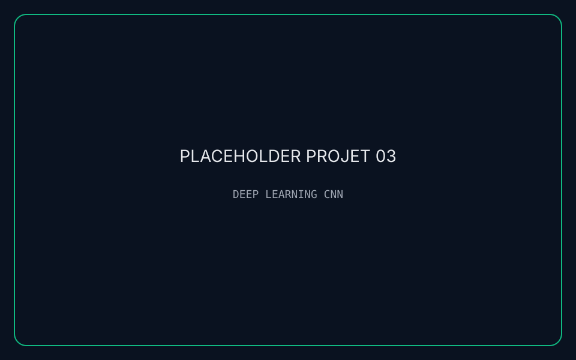
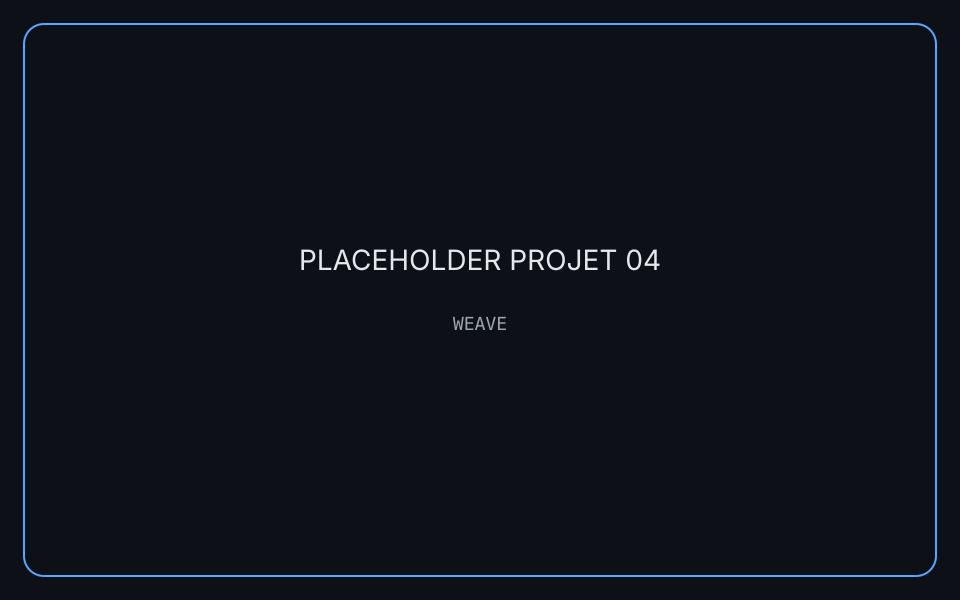
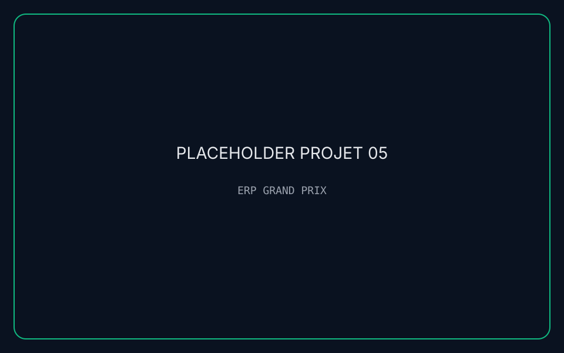

[PROJET 01]
IA WIREPAS FRANCE — Automatisation
Pipeline IA pour détecter les prospects prioritaires, unifier des données hétérogènes et accélérer la prise de décision commerciale.
IUT2 Grenoble • 19 ans • IA / Data / Apps
Je conçois des systèmes IA intelligents et des applications performantes à Grenoble. Objectif : livrer des expériences data utiles, élégantes et mémorables.
> Mission Concevoir des solutions IA & data orientées impact.
> Focus NLP, Computer Vision, pipelines data, apps robustes.
> Stack Python, Java, JavaFX, Node.js, React, SQL.
> Signature Curiosité, rigueur, sens produit et autonomie.
Trajectoire IA racontée comme un log de mission.
Spécialisation IA, data et développement d'applications performantes.
Détection de prospects, normalisation data et dashboards décisionnels.
Base scientifique solide et esprit d'analyse orienté résolution.
Chaque projet est un module clé d'un système IA cohérent.

Pipeline IA pour détecter les prospects prioritaires, unifier des données hétérogènes et accélérer la prise de décision commerciale.

Modèle supervisé optimisé pour classer des dépêches en temps réduit, avec pondération lexicale et performance stable.

Pipeline complet de vision avec data augmentation et tuning d'hyperparamètres pour une classification fiable.

Plateforme collaborative pour orchestrer des flux critiques, avec supervision temps réel et gouvernance RGPD.

ERP desktop orienté sécurité et logistique événementielle, avec architecture MVC et modules métier complets.
Survolez chaque compétence pour révéler le signal.
Le prochain clic déclenche l'échange.
Disponible pour alternance à partir de septembre 2026.